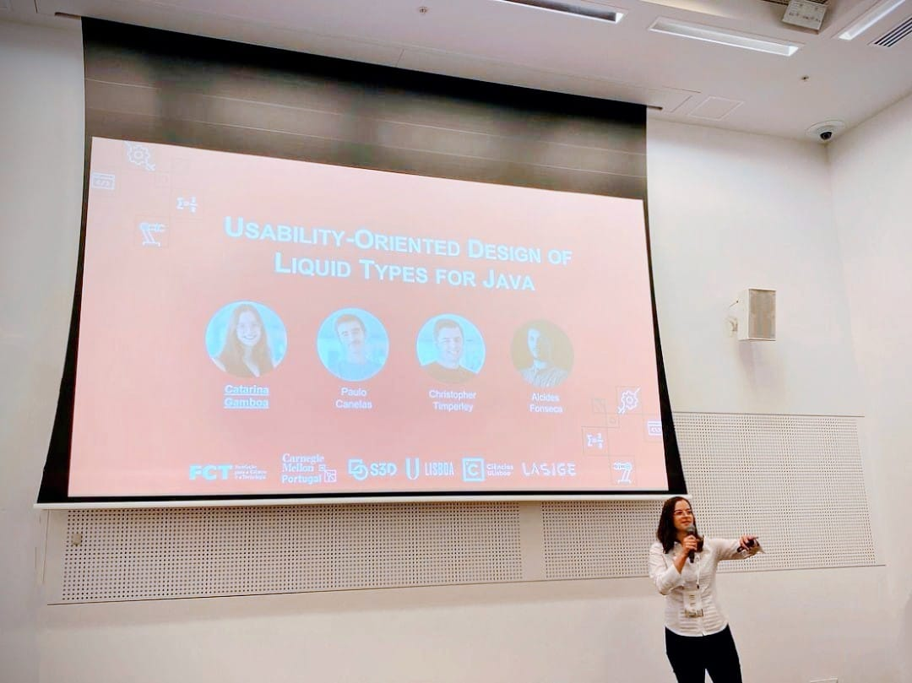

ICSE 2023, Melbourne, Australia
LiquidJava
Usability-Oriented Design of Liquid Types for Java
ICSE 2023 - International Conference on Software Engineering, CORE A*.
LiquidJava adds liquid types to Java: types that also say which values are allowed, checked at compile time. We designed it with Java developers and tested it with 30 of them. They found and fixed more bugs, and all 30 would use it.
Best Student Poster INForum 2021
What LiquidJava looks like
Refinements are Java annotations. LiquidJava checks them as you type and underlines the code that breaks one.
Could you use these without an explanation?
Participants saw these three snippets before any training (Listing 4). Find one use that LiquidJava accepts and one it rejects.
Give x a value.
// 1 - Variable Refinement
@Refinement("-25 <= x && x <= 45") int x;
x = ;- A value LiquidJava accepts
- A value LiquidJava rejects
got both right on first sight.
Call function1.
// 2 - Function/Method Refinement
@Refinement("_ >= 0")
public static double function1(@Refinement("a >= 0") double a,
@Refinement("b >= a") double b)
{ return (a + b)/2; }
function1(, );- A call LiquidJava accepts
- A call LiquidJava rejects
got both right.
Create a MyObj and call at least three methods. State names are hidden, as in the study.
// 3 - Class Protocol Refinement
@StateSet({"sX", "sY", "sZ"})
public class MyObj {
@StateRefinement(to="sY(this)")
public MyObj() {}
@StateRefinement(from="sY(this)", to="sX(this)")
public void select(int number) {}
@StateRefinement(from="sX(this)", to="sZ(this)")
public void pay(int account) {}
@StateRefinement(from="sY(this)", to="sX(this)")
@StateRefinement(from="sZ(this)", to="sX(this)")
public void show() {}
}- Create a MyObj to start.
- A sequence of 3 or more calls that passes
- A sequence LiquidJava rejects
got both right with no explanation. After a 4-minute video, all of them could write one.
Designed with Java developers
How LiquidJava checks a program
Which syntax would you pick?
We asked 50 Java developers to rate syntax options (Figure 2). Pick one to see their answers.
- Not acceptable
- Acceptable
- Preferable
Developers preferred Java-like syntax, so LiquidJava puts each refinement next to what it refines.
The bug nobody fixed in plain Java
The rules for java.net.Socket live only in its documentation. LiquidJava turns them into a state machine the compiler checks. No participant fixed this bug in plain Java; with LiquidJava, all of them did.
- Create a socket to start.
@ExternalRefinementsFor("java.net.Socket")
@StateSet({"unconnected", "bound", "connected", "closed"})
public interface SocketRefinements {
@StateRefinement(to="unconnected(this)")
public void Socket();
@StateRefinement(from="unconnected(this)", to="bound(this)")
public void bind(SocketAddress add);
@StateRefinement(from="bound(this)", to="connected(this)")
public void connect(SocketAddress add, int timeout);
@StateRefinement(from="connected(this)")
public void sendUrgentData(int n);
@StateRefinement(from="!closed(this)", to="closed(this)")
public void close();
}What 30 Java developers did with it
Each participant fixed bugs in plain Java, then with LiquidJava, on different exercises.
found the bug with LiquidJava in every exercise
exercises were faster with LiquidJava
would use LiquidJava in their projects
Finding and fixing bugs
- Correct
- Compiler correct (error silenced, bug not fixed)
- Incorrect
- Unanswered
Writing their own refinements
After a 4-minute video, participants annotated three programs (Figure 10). All rated it Easy or Very Easy.
What they liked and disliked
Select a topic to read what a participant wrote.
Liked most
Disliked most

At ICSE 2023
Presenting the paper in Melbourne, Australia.
Cite
@inproceedings{gamboa2023usability,
title = {Usability-Oriented Design of Liquid Types for Java},
author = {Gamboa, Catarina and Canelas, Paulo and
Timperley, Christopher and Fonseca, Alcides},
booktitle = {2023 IEEE/ACM 45th International Conference on
Software Engineering (ICSE)},
pages = {1520--1532},
year = {2023},
publisher = {IEEE},
doi = {10.1109/ICSE48619.2023.00132}
}